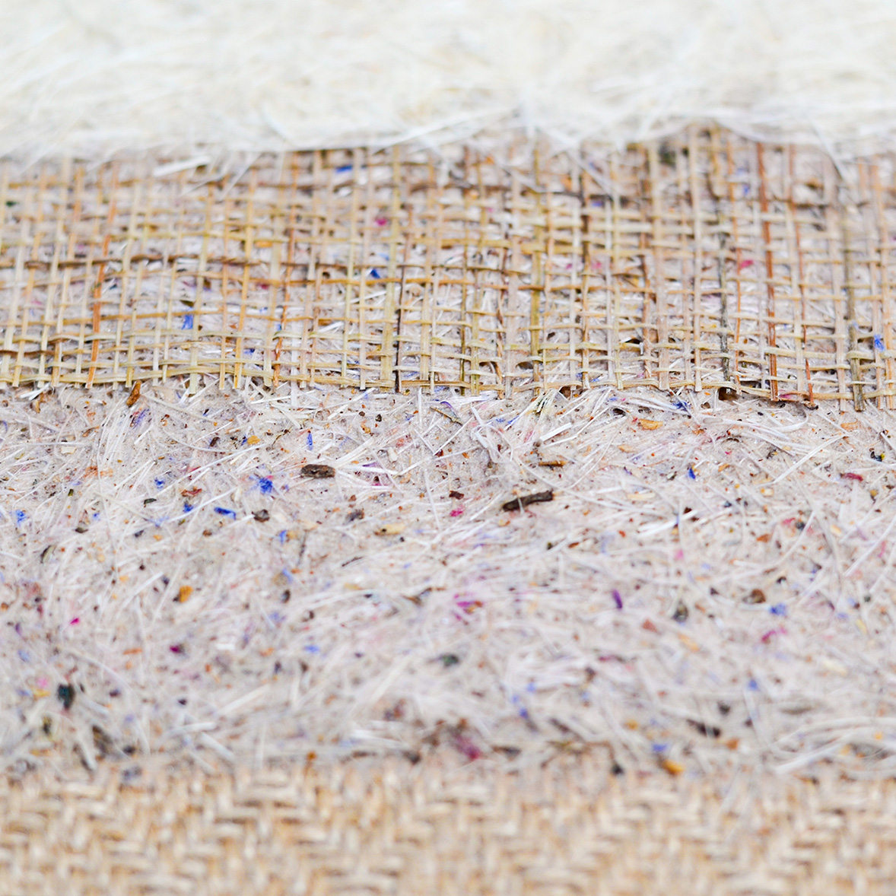
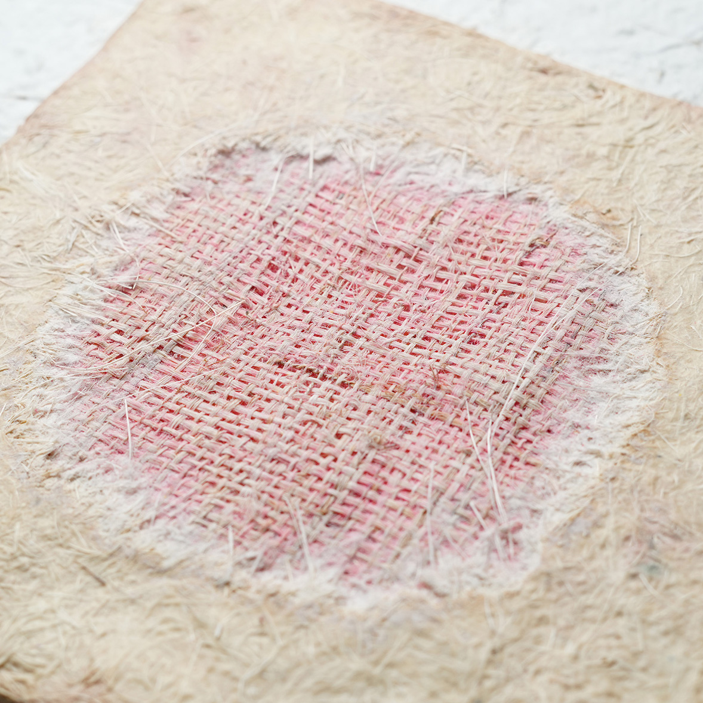

Spoor helps human caregivers better understand their pets’ wellbeing preferences through the animals’ own instinctive choices. Drawing on Mongolian nomadic care practices, it translates the biodiversity conditions of the steppe into a domestic-scale interface where urban pets can engage freely and safely with diverse natural sensory cues organised into wellbeing themes. Cumulative engagement traces form interpretable patterns, bringing animal-led insight into everyday care and decision-making that remains difficult to access through human-led, indirect approaches.
How it works

Click or hover to enlarge; drag to explore on mobile.
Animals are known to forage and self-select natural materials to support their wellbeing, a phenomenon referred to as zoopharmacognosy. Drawing on scientific and practice-based knowledge, Spoor translates this natural intelligence into an everyday care interface:
Natural sensory cues
Organised and embedded into wellbeing-themed zones.
Free engagement
Animals engage safely with the zones they are drawn to.
Cumulative traces
Repeated interaction leaves readable marks over time.
Human interpretation
Caregivers interpret emerging preference signals from differentiated wear patterns.
Each zone combines multiple herbs and natural materials into a distinct sensory cue associated with a particular wellbeing theme, drawing on applied zoopharmacognosy and established veterinary and natural remedy practices.


Hover to view wear traces
Spoor is built as a pet-safe multi-layered bio-composite interface designed to hold and present natural sensory cues, supporting species-specific interactions and allowing interpretable traces to form gradually over time.
Trace layer
Records and accumulates interactions over time.
Confinement layer
Helps limit access and reduce the risk of excessive ingestion.
Carrier layer
Retains and preserves embedded natural sensory sources.
Base layer
Provides durable, moisture-resistant support.
Progressive wear reveals the colour identifier, allowing the caregiver to map traces to the corresponding theme. In standard prototypes, the surface layer remains mostly beige. In display prototypes, colours are made more visible to distinguish the themes.